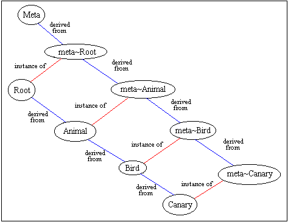

This is an overview of the Epsilon language, which is a simple dialect of Smalltalk. Knowlege of Smalltalk is helpful, but not required. You must, however, understand object-oriented programming.
Every program must contain a main routine. Here is an example:
main
{
cout << "Hello, world!\n"
}
This main routine prints "Hello, world!" to STDOUT. It achieves this by sending the << message (actually an overloaded operator) to the 'cout' object, with the string "Hello, world!\n" as a parameter to that method.
Built-in objects, such as cout, and the details are message-sending are described later.
Epsilon has several built-in classes, but you can also declare your own classes, as follows:
class <class-name>
{
<member-declarations>
}
For example, here is a typical Pair class:
class Pair : Root
{
attribute a, b.
method initA: iA B: iB.
method getA.
method getB
}
This class defines objects that can store a pair of other objects. It has two attributes, a and b, for storing the two objects in the pair, and it has three methods. The initA:B: method takes two parameters, iA and iB. The getA and getB methods each take zero parameters. Except for the overloaded operators, a method generally takes a number of parameters equal to the number of colons (:) in its name.
The bodies of these methods are not given here; they must be defined after the class declaration. We will see how to do this later.
Notice that the types of the attributes and method parameters (as well as the return types of the methods) are unspecified. This is because Epsilon, like Smalltalk, is an untyped language.
The ": Root" part of the declaration specifies that the Pair class is derived from Root, which is a built-in class (built-in classes are described later). This means that Pair inherits all of Root's instance members and class members.
C++ programmers should note that all methods in Epsilon are virtual. You cannot create nonvirtual methods in this language.
You should also note that constructors and destructors do not exist in this language, although you can simulate constructors by creating "init" methods, like the "initA:B:" method shown above.
We can define Pair's initA:B: method as follows:
method Pair::initA: iA initB: iB
{
bind a to iA.
bind b to iB
}
This method binds the Pair's 'a' and 'b' attributes to the iA and iB parameters, respectively.
It is important to understand this 'binding' process well, because it is quite different from assignment in most programming languages, although it is similar to assignment in Java. When a variable is bound to an expression, the variable is caused to refer to the object resulting from evaluation of that expression. A variable is not an object, so binding a variable to an object does not entail the copying of an object from one region of memory to another. It is very much like references in C++.
Notice that initA:B: does not explicitly return a value. Every method must return a value. If you do not explicitly return a value, the special variable 'self' will be implicitly returned for you. 'self' is a variable which always refers to the object receiving the current message. In this case, self is a Pair.
The other two Pair methods can be defined as follows:
method Pair::getA
{
^a
}
method Pair::getB
{
^b
}
These methods explicitly return the values a and b. The ^ operator is equivalent to a return statement in a traditional programming language.
The notion of a 'metaclass' can be a little confusing for programmers of traditional languages, including C++. It is an important concept, however, because it accounts for the difference between class members and instance members of a class.
In Epsilon, a class is actually considered an object; thus, you can send a message to classes as well as sending messages to objects.
Since a class is an object, it must therefore be an instance of some other class. We call this 'other class' the metaclass of the class.
For example, consider the class hierarchy shown in the diagram below:

The red lines show "instance of" relations, and the blue lines denote derivation. We can see that a Canary is a type of Bird, which is a type of Animal, and Animal is derived from Root (because all classes in Epsilon must ultimately be derived from Root).
Canary is both a class and an object (because all classes are objects, in addition to being classes). We can see that Canary is, in fact, an instance of class meta~Canary. Thus, meta~Canary is the metaclass of Canary. Likewise, meta~Bird and meta~Animal are the metaclasses of Bird and Animal, respectively.
When you declare a class in Epsilon, a metaclass is automatically created for your class. Thus, simply declaring the classes Animal, Bird, and Canary will give rise to the hierarchy shown above (assuming the proper inheritance structure).
Furthermore, metaclasses always form an inheritance hierarchy parallel to that of their instance classes. That is, meta~Bird is derived from meta~Animal automatically by virtue of the fact that Bird is derived from Animal.
C++ programmers often are not aware of the difference between class members and instance members. An instance member is a member belonging to an instance of the class in question, whereas a class member belongs not to instances of the class, but to the class itself. They are much like static members in C++.
Thus, if class C has a class method called new and an instance method called init, then the new message can be send to C, and the init message can be send to instance of C.
This distinction is related to metaclasses in the following way: class members actually belong to a class' metaclass, whereas instance members belong to the class.
This is consistent with the idea that an object's behavior is governed by its type, or class. When an object receives a message, the message name is looked up in the object's class in order to determine how the object should respond to the message. Likewise, since a class is an object, a message sent to a class is looked-up on the class's metaclass to see how the class should respond. This allows the message-dispatching mechanism to function identically for both class methods and instance methods.
An object is created by sending the new message to a class. The result of this message-send is a new instance of the class.
new is actually a class method inherited by all classes. If you do not define new in your class, the inherited method will be invoked when new is sent to your class. This is acceptable because the new object that is created will always be an instance of the most derived class to which it was sent. That is, the type of the new object will not be the superclass from which your class inherited new; the object will actually be an instance of your class.
If you do decide to override new, you should call the superclass version within your override:
method MyClass::new
{
^super new init
}
This method sends new to 'super,' which denotes MyClass' superclass. The result is a new object of type MyClass. This object is then sent the init message. Finally, the ^ operator is used to return the newly initialized object.
The == operator behaves differently in Epsilon than in most other languages. Rather than comparing two objects for equality, == simply decides whether two expressions evaluate to exactly the same objects. Two objects of the same type and identical attributes will not test equal under ==, because they are not the same object.
The built-in object, nil, is a special object that takes the place of NULL and null in C++ and Java, respectively. nil, however, is not a NULL pointer; it is truly an object, and you can send messages to that object. The only really useful message that nil can respond to is the isNil message, which always returns true (for nil). All other objects return false fro this message, so rather than comparing an object to nil via the == operator, you can send it the isNil message.
Local variables within methods are declared using the object keyword:
object x, y. bind x to Pair getA. bind y to Pair getB.
The code above declares two local variables, x and y, and then proceeds to bind them to the elements of a Pair. You may not explicitly initialize the objects on their declaration line using an = operator, as you can in C++. They will be initialized to nil at the point of declaration, and you can then bind them to other objects after the declaration.
A variable's scope begins at its declaration and extends to the end of the current block, or to the end of the method if the declaration is not inside a block.
You cannot declare global variables.
There are several different types of message that can be sent to objects, but all message-sends generally consist of a recipient object followed by a message name, followed by the message parameters.
A unary message is one which takes no parameters. The name of a unary message does not contain any colons (:). The new message is a unary message. It can be sent to a class as follows:
MyClass new
Unary messages, or 'selectors' have highest precedence.
A binary operator, such as '+', can be used much like in other languages:
x+y
The above expression is a message send; it sends the '+' message to the object to which x is bound, with y as a parameter. The expression evaluates to the object returned by the '+' message.
Binary operators have lower precedence than unary selecrtors.
A 'keyword selector' is a general message-send with multiple parameters. It consists of a recipient object followed by the selector (the method name), with actual parameters interspersed among the parts of the message name:
cursor gotoX: 22 Y: 34.
The statement above sends the gotoX:Y: message to the cursor object, passing 22 and 34 as the parameters.
Here's another example:
bind file to File open: "myfile.txt" mode: OF_READ share: OFS_EXCLUSIVE
This sends the open:mode:share: message to the File class, which results in an object of type File, representing the file that has (hopefully) been opened. The parameters to this message are "myfile.txt", OF_READ, and OFS_EXCLUSIVE.
Keyword selectors have lower precedence than binary operators.
The built-in classes are described elsewhere in more detail, but we will briefly mention the important classes here.
The Integer and Float classes represent numbers, and provide common arithmetic and comparison operators, such as +, -, <, and >.
The String class represents a character string. Note that string literals appearing in your source code are automatically compiled into String objects, so you can do things like this:
"Hello, world" equal: myString
This expression causes the equal: message to be sent to "Hello, world", with myString as a parameter. The result will be an instance of the True class or the False class (see Built-In Objects, below).
Another very important class is the Block class. Blocks are used to implement all of the flow-of-control constructs in the language.
For example, consider the following code:
bind x to 1. [x<10] whileTrue: [ bind x to x+1 ]
This code binds x to an Integer object having value 1, and then sends the whileTrue: message to the Block object [x<10]. The second Block, [bind x to x+1], is passed as a parameter to the whileTrue: method.
The whileTrue: method repeatedly executes its parameter Block (which is [bind x to x+1] in this case), until the expression in the recipient block, [x<10] evaluates to the false object.
In like fashion, the other flow-of-control constructs are defined as methods of built-in classes. All flow-of-control constructs are described in a later section.
Note that a block can accept parameters:
[:i :j | cout << i+j ] evaluateOn: 3 and: 4
This code sends the evaluateOn:and: message to the Block, passing 3 and 4 (both Integer objects) as parameters. This message causes the block to be evaluated, with the Block parameters (i and j) bound to the actual message parameters (3 and 4).
Block parameters are often employed when iterating over collections:
someCollection foreach: [ :e | cout << e ]
If someCollection is an object of some class having a foreach: message, this will likely cause the block to be evaluated once for each element in the collection, with the Block parameter, e, bound to each successive element in the iteration.
Blocks may contain more than one statement. You must separate statements with a period (.). However, the last statement must not be terminated by a period:
employees foreach:
[ :emp |
emp increaseSalary: 0.25.
emp notify: "Your new salary is $" + (emp getSalary)
]
A block evaluates to the value of the last statement in the block. Thus, if the notify: message in the last line of the block shown above returns some object, x, then the entire block will evaluate to x when the block is executed.
A block is much like a procedure, since it takes parameters and can be "called." However, return statements inside a block do not return from the invocation of the block, but from invocation of the method containing the block.
Consider an example:
method List::get: x
{
elements foreach:
[ :e |
(e getKey equal: x) ifTrue:
[^e]
]
}
This code iterates through the collection called 'elements,' invoking the outer block once for each element. When the expression (e getKey equals: x) evaluates to true, the ifTrue: message will cause the inner block [^e] to be executed.
This block simply returns e. However, this return statement returns from the List::get: method, not just from the inner block.
Blocks are sometimes called closures, because of their behavior regarding static scoping.
When the flow-of-control reaches a block, the block is instantiated as a Block object. The Block object may then be passed as a parameter to a routine, such as whileTrue:. Since the Block is a first-class object, just like other objects, it can be stored in data structures. It could even be returned from a method.
The significance of this fact becomes clear when one considers that the expressions in the block may contain references to local variables in the enclosing method. If the Block object is still accessible after the method returns, then the expressions in the Block may refer to local variables that have gone out of scope.
Normally, when a variable goes out of scope, its memory is reclaimed by the garbage collector. However, when a Block object is created, a closure is formed around the block, effectively "locking" all enclosing scopes for the lifetime of the block. In this way, the garbage collector is prevented from reclaiming variables in any enclosing scope until the Block itself is deallocated.
There are currently only 3 built-in objects in Epsilon, true, false, and nil.
The true object is an instance of class True, which always responds positively to ifTrue: messages and negatively to ifFalse: messages.
Conversly, the false object always responds negatively to ifTrue: messages and positively to ifFalse:.
We have already seen the whileTrue: method of the Block class. A whileFalse: method is defined similarly, and the until: method works much like the do..until construct in other languages:
[ bind x to x+1 ] until: [x equal: 10]
A for-loop construct is simulated by the upTo:do: method of the Integer class:
1 upTo: 10 do: [ :i | cout << i << '\n' ]
This will cause the block to be invoked once for each integer in the range 1..10, with the block parameter, i, bound to each successive integer value in that range.
A block can be evaluated some fixed number of times via the timesDo: method of Integer:
10 timesDo: [ cout << '*' ]
A block can be invoked once for each element of an array:
object array. bind array to Array new setSize: 10. 1 upTo: 10 do: [:i|array at: i put: i*2]. array do: [:elem|cout << elem << '\n' ]